bergercookie Mar 29, 2016
Project Info
Objective:The purpose of the project is to design and develop the necessary algorithms for a full sperm-test analysis. We first develop an android application for capturing a video of the sperm sample so it can be analysed by computer vision algorithms. To decouple the acquisition and analysis steps and also facilitate in fast execution of the algorithms, we implement a server-client communication model, so that after acquisition, the video is transferred to a central server. Upon processing, the results are sent back to the mobile device where they are presented to the user.
Finally, insight, on extending the project into a fully functional hardware device is also provided. Upon integration with the hardware, the device should offer an point-of-care cost-affordable alternative for the costly, and often uncomfortable for the patient, procedure of laboratory sperm examinations.
Team Members:
1. Mavroudis Angelos
2. Parousi - Papadopoulou Athina
3. Koukis Nikos
4. Derventzis Konstantinos
Team Contact:
Koukis Nikos - nickkouk@gmail.com
Mentor:
Alexopoulos Leonidas (leo@mail.ntua.gr)
Consultants:
Kanakaris Georgios (gkanak84@gmail.com)
Milestone 1: Preliminary design
Introduction
DefinitionThe spermodiagram is a medical examination which tests the health of a patient's semen, and helps find the cause of problems in procreation by measuring the motility, the number, the vitality and the pH of the subject’s sperm.
Examination procedure Before a sample is given, the patient should be sexually inactive for 2-5 days. After giving a sample, the semen is kept at body temperature for 20-60 minutes so it can liquefy. Afterward, the doctor pours a drop of the sample onto a microscope slide with a pipette and seals it with a cover slip. He then starts adjusting the lenses of the microscope so that he could have the best possible image to evaluate the sample in the best possible way. The term ‘best’ is quite relevant. The best image is defined by the surface of the sample that will include enough sperms to evaluate and in this surface the sperm that is examined will not move away from the examined frame.Then the doctor calculates the sperm this is achieved with a Neubauer plate.
The "lenses" theory Regarding the lenses, it was observed that an appropriate image is achieved at 20X10, and 40X10 zoom. These magnifications can be achieved with two lenses, one objective and one eyepiece. The objective lens is responsible for the magnification of the sample and the eyepiece lens for the zooming of the image. The difference is that the first kind of lenses "adds more information" to the image, while the other kind just makes the image bigger.
Similar Projects A research was conducted in order to find projects similar to this one. There were only few that had the same objective and are presented below:
I-Sperm: is a very similar project to ours but it is applied for animal examination. The concept is simple. I-sperm is a structure consisting of a number of lenses and a specially designed basis on which the sperm is based. This devise is mounted on an i-pad's camera and then a video is taken. The program starts running and after a couple of seconds you know if your animals are fertile. There are two important drawbacks in this project as the software is only compatible with i-pads and moreover the device is too expensive. A single i-sperm costs approximately 1500 $.
Virus and Nano-Particle Imager : device created by the company "Holonomic". It weights less than 200 grams and detects single 100 nm. The imaging results of a smart phone platform were validated using scanning electron microscopy images of the same sample.
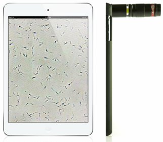 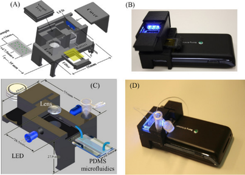
In the above images, the left one is the I-sperm device and the right one the "Virus and Nano-Particle Imager"
The rest of the projects that were found had the same principal. Generally, they were not for counting sperm exclusively. The structures of these projects were simple with the lens either applied on the phone’s camera directly or supported by a small basis that can be applied on a mobile phone. The problems with these projects were either that the necessary magnification to conduct sperm analysis could not be achieved or the overall structure of the device was exceeding the dimensions of a typical pharmaceutical product. The team has managed to find ways to deal with the aforementioned problems, as they are described below.
General Description - Using the device
A typical usage of the device consists of the following steps.- Purchase of the device from a pharmacy. A set of additional material will be packed together so that the overall execution can be automated
(2) microscope slides
(2) Cover slips
(2) Pipettes - Device setup.
The user should deposit a small amount of the sperm sample between a slide and a slip and place it in the designated position in the device. - Sperm sample analysis and results
Afterwards the user should place his phone on top of the device in a horizontal orientation and launch the Sperm3000 application (downloaded from the Android Market). Then, following the on-screen instructions, a fixed-length video will be taken and analysed. Finally the results are printed in the user's screen.
Specifications and Goals
The main goals set for the software under-development can be summarised as follows:
- Compatibility w/ the majority of phones in the market.
- Fast and accurate results independent of the user's smartphone
- Android application designed to work on the majority of Android platforms currently in the market
Design for Android API > 15 - Setup of an external server node. The smartphone application connects and sends the data so that the analysis can proceed in the same speed and independent of the running android platform and its computational capabilities
Conceptual Design Brainstorming
Following, are the two main alternatives to the designed that we finally came up with.
The first one was influenced by one of the devices that already exists and is presented in Figure 1.
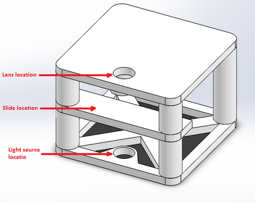
Figure 1: First idea about the device. Although, it is a lightweight design and it can reach the desired magnification it has a couple of disadvantages:
- Due to its large volume it would be difficult to be shipped or sold in a pharmacy in large amounts. Even if it was disassembled into parts, it would still not be suitable for its purpose.
- In order to reach the requested magnification we had to make use of the digital zoom of the smartphone's camera. So, we would lose quality
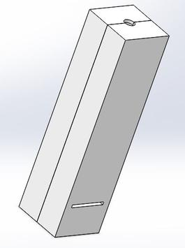
Figure 2: Final idea about the device. Note: A thorough analysis of the final design is given in milestone 2: (Detailed design>Structural Part>Device design).
Milestone 2: Detailed design
Based on the previous analysis the project can be broken down into two major parts :
- Software part
- Structural
We concentrate our analysis on the software part and give an insight into a potential implementation of the structural in the final paragraph of the page.
Software
The software part comprises three subparts which are listed and explained in detail below:- Image analysis part
- Android application
- Server side communication
Image analysis
Based on the specifications set, the main objectives of the algorithm are to compute an estimation of the total number of spermatozoa in a given image (given the overall volume in a user's sample) as well as motility stats of the detected spermatozoa. Due to its versatility and ease in writing boilerplate code, the initial version of the image analysis algorithm which is to run on the server is coded in MATLAB .
The algorithm which was built has these main functions:
- Read a video
- Learn the background (non-moving objects over the entire sequence of frames) and the foreground (moving spermatozoa)
- Apply morphological operations in order to recognize the moving objects in the video and filter out the image noise
- Count the moving objects in each frame and find the average
- Track the moving objects and calculate their velocity
In more detail, Matlab functions special for image processing were used for our purpose. The most significant of them are presented below:
vision.ForegroundDetector (System object)
Description The ForegroundDetector System object compares a color or grayscale video frame to a background model to determine whether individual pixels are part of the background or the foreground. It then computes a foreground mask. By using background subtraction, you can detect foreground objects in an image taken from a stationary camera.
Construction detector = vision.ForegroundDetector returns a foreground detector System object, detector. Given a series of either grayscale or color video frames, the object computes and returns the foreground mask using Gaussian mixture models (GMM). Properties Some of the properties with values that affect the way this function is applied are: NumTrainingFrames (specifies the number of initial video frames for training background model), MinimumBackgroundRatio, (threshold to determine background model), NumGaussians (specifies the number of Gaussian modes in the mixture model).
vision.BlobAnalysis (System object)
Description The BlobAnalysis object computes statistics for connected regions in a binary image. Using the step syntax with input binary image, blob analysis object and any optional properties will return statistics of the input binary image depending on the property values specified. Construction H = vision.BlobAnalysis returns a blob analysis System object, H, used to compute statistics for connected regions in a binary image. H = vision.BlobAnalysis(Name,Value) returns a blob analysis object, H, with each specified property set to the specified value. Properties Some of the properties of this function are AreaOutputPort, CentroidOutputPort, BoundingBoxOutputPort, which are properties responsible for the outputs, as long as with properties such as Connectivity, MaximumCount, MaximumBlobArea, which values can be changed in order to service the application.
vision.KalmanFilter (Class)
Description The Kalman filter object is designed for tracking. You can use it to predict a physical object's future location, to reduce noise in the detected location, or to help associate multiple physical objects with their corresponding tracks. A Kalman filter object can be configured for each physical object for multiple object tracking. To use the Kalman filter, the object must be moving at constant velocity or constant acceleration. The Kalman filter algorithm involves two steps, prediction and correction (also known as the update step). The first step uses previous states to predict the current state. The second step uses the current measurement, such as object location, to correct the state. The Kalman filter implements a discrete time, linear State-Space System. Construction obj = vision.KalmanFilter returns a Kalman filter object for a discrete time, constant velocity system. To track objects, the predict and correct methods must be used based on detection results. This object implements a discrete time, linear state-space system, described by the following equations:
| State prediction: | x(k)=Ax(k−1)+Bu(k−1)+w(k−1) |
| Measurement update: | z(k)=Hx(k)+v(k) |
configureKalmanFilter
Description
kalmanFilter = configureKalmanFilter (MotionModel, InitialLocation, InitialEstimateError, MotionNoise, MeasurementNoise) returns a vision.KalmanFilter object configured to track a physical object. This object moves with constant velocity or constant acceleration in an M-dimensional Cartesian space. The function determines the number of dimensions, M, from the length of the InitialLocation vector.
This function provides a simple approach for configuring the vision.KalmanFilter object for tracking a physical object in a Cartesian coordinate system. The tracked object may move with either constant velocity or constant acceleration. The statistics are the same along all dimensions.The Kalman filter implements a discrete time, linear State-Space System. The configureKalmanFilter sets the vision.KalmanFilter object properties.
(For more information about the above functions, you can visit http://www.mathworks.com .)
In the videos below, one can see the results of the sperm concentration algorithm:
Image processing for calculating the concentration of spermatozoa in a sequence of frames. The algorithm detects foreground moving objects in a binary image and plots a rectangle in the initial video for the spermatozoa that are detected
In order to test the behavior of the tracking algorithm we plotted the trajectory of two spermatozoa during a sequence of the given video. The results are given in the following images:
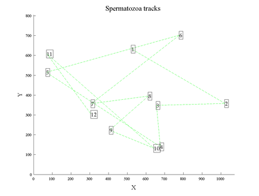 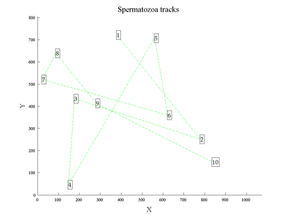
Fig. 3-4. Plots of the positions of random spermatozoa through the frames. The positions were given as outputs of configureKalmanFilter.
Having the average number of spermatozoa (moving objects) that are seen in a frame, it is possible to calculate the total concentration , based on the total volume of the sample, the volume of sample that was put on the slide (parameters that the user has to input in the beginning), the area of the sample on the slide and the area of what is seen with the camera. The calculation of the latter requires calibration of camera used, based on the video that is produced by the application. For the development of this algorithm, as the device is not yet ready, the videos that were used were taken from the microscope of the laboratory. For these videos (with resolution 1024x768), camera calibration gave the following results:
- For magnification 10x: 472x354 μm (1 pixel equals to 0.461 μm)
- For magnification 20x: 231x174 μm (1 pixel equals to 0.226 μm)
- For magnification 40x: 165x124 μm (1 pixel equals to 0.161 μm)
Moreover, with the result of the operation of tracking the spermatozoa (moving objects), it is possible to calculate the velocity of each track, through the position that had in every frame. The direct calculation can give pixels/frame. To convert this to μm/sec, what is needed is the frame frequency of the video (which in this case is 15 frames/sec) and, from camera calibration the amount of micrometers that are presented by one pixel, as seen above. After this, the algorithm classify the tracks in categories based on their velocity and gives as output the percentage of spermatozoa that belong in each one. The categories are the following:
- Fast forward movement A > 25 μm/sec
- Slow forward movement B 5 - 25 μm/sec
- Movement on the spot C < 5 μm/sec
The code for the image analysis algorithms previously mentioned can be accessed through Github .
Android application - Sperm3000
For capturing video of the sperm sample an android application has been developed so that. This was decided, given that most of the phones in the market utilise the Android OS, the application and thus the device audience increases dramatically. The application is heavily based on the Open Camera Project . This decision was due to the camera setting capabilities and features that Open Camera offers (auto-stabilise, fix-length of video, timers, Camera2 API support etc).
Furthermore in order to run on most modern android devices the application is coded having API 15 as the minimum API that can run on. This way the application can run on all android versions, since Android 4.0 (Ice Cream Sandwich) which add up to 94% of the total number of Android devices currently in the market.
Application Interface The application consists of the following screens:
- Initial/Homescreen
From which the user states his intention (Shoot video / see previous results etc) - Camera The user shoots a predetermined fixed-length video.
- Settings Tinkering with application settings as well as setting another IP/port combination is available.
A typical preview of the homescreen and camera screens is given below:
| | 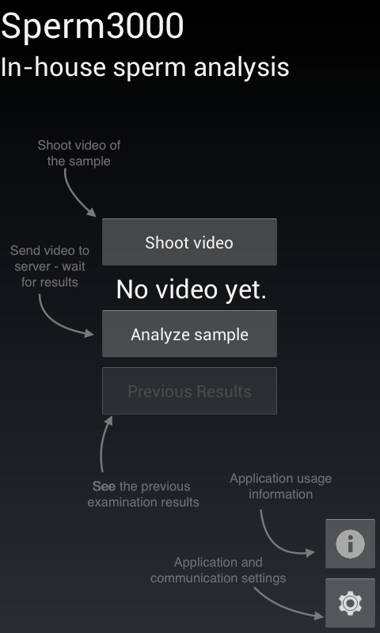 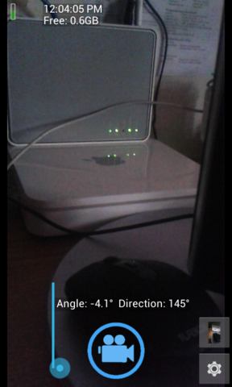 |
Communication with server
In order to make the analysis of the video independent of the computational capabilities of the user's, we implemented a client-socket communication protocol so that the device can send the video to an external server and then wait for the results and print them accordingly to the screen of the user. A TCP Socket client is initialized from within the application and connects to a predefined IP/Port pair which corresponds to the analysis server. Before sending the data to the server, the java client encodes the data in base64 binary format. In order to make the communication as robust as possible, the client is coded using a Client Thread so that the application will not block every time the connection is set up. A sample of the ClientThread code is given below:
class ClientThread implements Runnable {
@Override
public void run() {
if (MyDebug.LOG)
Log.d(TAG, "ClientThread: Running.");
try {
InetAddress serverAddr = InetAddress.getByName(SERVER_IP);
socket = new Socket(serverAddr, SERVERPORT);
if (MyDebug.LOG)
Log.d(TAG, "ClientThread: Thread made the connection.");
connectionEstablished = true;
} catch (UnknownHostException e1) {
if (MyDebug.LOG)
Log.d(TAG, "ClientThread: UnknownHostException");
e1.printStackTrace();
} catch (IOException e1) {
if (MyDebug.LOG)
Log.d(TAG, "ClientThread: IOException");
e1.printStackTrace();
}
}
} The application was exclusively coded in Java , using the Google Android Studio IDE. The code as well as the .APK (which is currently in DEBUG mode) can be found in Github . Server-side communication
For the video to be transferred to the server, a TCP Socket server is set up using Python. Although it would have been straightforward to setup both the image analysis algorithm and the TCP server in MATLAB, we decided to use Python for all networking purposes and keep MATLAB to the computer vision part exclusively. This was decided having the extensibility of the project in mind, as Python is the standard language for networking and communications in the majority of projects. After the python server successfully accepts the connection, it receives the video and stores it in a file under the directory (/videos_in/pending/). After the transfer has completed, it decodes the base64 binary data and moves the file to the /videos_in/done/ directory. Meanwhile the MATLAB computational node, using the watchDog_dir module, scans the latter directory for changes, and when it detects a new video it uses it as input for the image analysis algorithm. After the sperm analysis is completed MATLAB writes the results in a "Python-Watched" directory (/results_out/done/). Finally python having detected the changes in the aforementioned directory sends the updated content (a results textfile) back to the client. The process described can be summarised in the following figure.
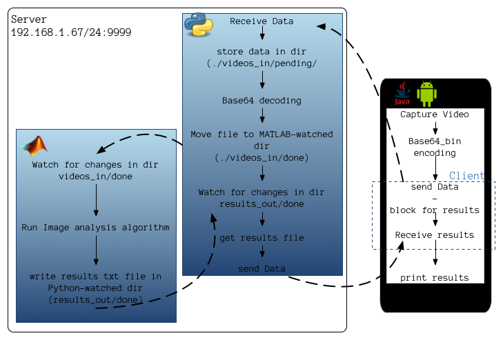
Figure 6. Flow chart of the communication between software parts
A sample of the watchDogDir function is given below:
function [changed, changes_in, changes_out] = watchDogDir(dirpath, timeout)A demonstration of the whole communication protocol is presented in the following video. A sample video is taken through the android phone, which is sent to a server. As described below MATLAB is eventually called (but runs with a predetermined video file since we didn't use real semen sample):
% WATCHDOG_DIR watches if the contents of a specific directory have changed by checking
% its contents. If it does it returns with code 1 as well as two lists of changes
% with regards to the initial contents. User can also specify an optional
% timeout parameter for the maximum time to wait until the function returns
%
% nickkouk, 20150112
% input validation - set the loop condition based on weather there is a
% timeout
if nargin == 2
maxTime = timeInSecs() + timeout;
condition = @(x) maxTime - timeInSecs();
else
condition = @(x) true;
end
fid = 1;
fprintf(fid, 'Waiting for change in directory: %s\n', dirpath);
waitBetweenChecks = 0.5;
initDirConts = dir(dirpath);
initDirLength = length(initDirConts);
initDirNames = {initDirConts.name};
while condition()
curDirConts = (dir(dirpath));
curDirLength = length(curDirConts);
% check against the initial value
if curDirLength ~= initDirLength
changed = true;
curDirNames = {curDirConts.name};
% setdiff - returns the values in A that are not in B!
changes_in = setdiff(curDirNames, initDirNames);
changes_out = setdiff(initDirNames, curDirNames);
return;
end
pause(waitBetweenChecks);
end
% if reached timeout has passed - return false.
changed = false;
changes_in = {};
changes_out = {};
return;
end
code
code
The code for the server modules are available in Github .
Structural part
Theoretical Background
Although most lenses do not fit in this category, from now on we will consider them to be thin lenses as it is a good approach. We define a thin lens as one that has two spherical surfaces close enough that we can neglect the distance between them (i.e. the thickness of the lens). For example eyeglasses are using a pair of sunglasses.One type of thin lens is the converging lens. In the figure below you can see its shape and its basic property. When a beam of rays parallel to the axis passes through the lens, the rays converge to a point F2 and form a real image at that point.
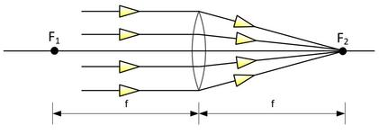
Figure 7: Converging lens In the same way, rays passing through point F 1 emerge from the lens as a beam of parallel rays.
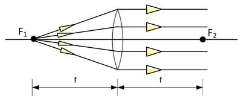
Figure 8: Emerging parallel rays
The points F1 and F2 are called the first and second focal points, and the distance f, which is measured from the center of the lens, is called the focal length.
A converging lens can form an image of an object. We can distinguish four cases depending on the position of the object:
- When the object is placed at infinity, the image is formed on the focal point on the other side of the lens, based on the second property described above.
- When the object is placed before the first focal point F1, a real inverted image is formed after the second focal point F2.
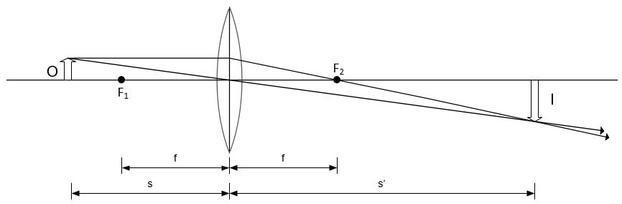
Figure 9: Real image formed by a thin converging lens. - When the object is placed on a focal point F the image is formed at infinity, based on the second property described above.
- When the object is placed between the first focal point F 1 and the converging lens, a virtual erect image is formed before the first focal point F 1 .
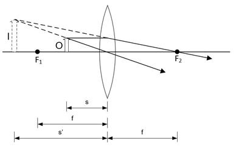
Figure 10: Virtual image formed by a thin converging lens.
As you can see in Figure 4 & Figure 5, the dimensions s and s' are noted. The first one refers to the distance between the object and the thin lens while the second one to the distance between the image (either real or virtual) and the thin converging lens. The equation which links these two dimensions and therefore describes the relationship between the object and the image, for a thin lens, is,
However, except Equation 1, there is another equation that uses these two dimensions to calculate the lateral magnification as shown below:
The negative sign shows that when s' and s are both negative the image is inverted. Thus signs are of great importance and the following rules apply:
- Sign rule for the object distance s : When the object is on the same side of the thin converging lens as the incoming light, the object distance s is positive. Otherwise, it is negative.
- Sign rule for the image distance s' : When the image is on the same side of the thin converging lens as the outgoing light, the image distance s' is positive. Otherwise, it is negative.
- A ray parallel to the optical axis emerges from the thin converging lens following a direction which passes through the second focal point F2.
- A ray through the center of the converging lens emerges at the same angle at which it enters because at this point the two surfaces of the lens are parallel.
- A ray through the first focal point F1 emerges parallel to the optical axis.
Moreover, it is of great significance the ability to combine converging lenses either with the first or the second method. In such case the image of the one lens becomes the object of the other.
Unfortunately, lenses do not form perfect images because they introduce some degree of aberration. Two of the most important types of aberration are spherical and chromatic aberration.
- Spherical aberration occurs due to the spherical surfaces being used. It causes beams parallel to, but distant from, the optical axis to be focused in a slightly different place than beams close to the axis. This manifests itself as a blurring of the image. One way to minimise this type of aberration is by the use of many lenses in a row. Manufacturers however resort to spherical lenses due to the ease of constructing them .
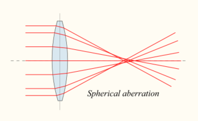
Figure 11: Spherical aberration. - Chromatic aberration is caused by the dispersion of the lens material, i.e. the variation of its refractive index n, with the wavelength of light. Focal length f is dependent upon n, so light of different wavelengths is focused to different positions. Chromatic aberration of a lens is identified as fringes of colour around the image. One way to minimise it, is by using an achromatic doublet (or achromat ) in which two materials with differing dispersion are bonded together to form a single lens. An even simpler way is the use of a color filter after the light source.
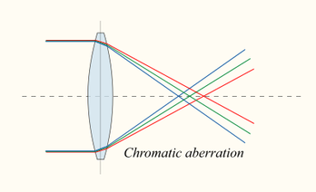
Figure 12: Chromatic aberration. At this point it would be very helpful to take a look at the function of the eye because reference to its characteristics will be made later. Its function is summarised by the fact that the refraction at cornea and surfaces of the crystalline lens produces a real image of the object being viewed. This inverted image is formed on the light-sensitive retina. It is very important to be formed exactly on the retina in order to see sharply. The eye adjusts to different object distances s by changing its focal length. However, there is a range over which distinct vision is possible. Its lower and upper bounds are called far point and near point of the eye .
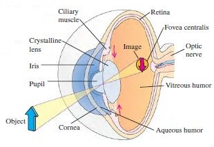
Figure 13: Parts of the eye and image formation. A camera has also a range over which it can capture sharp images of real objects. Instead of the retina it has a film and instead of the crystalline lens it has optical lenses with fixed focal lengths. Nevertheless, it can achieve to adjust to different object distances s, not by changing the focal length of its lenses, but by changing the distance between the lenses and the film. So, the optical behavior of a camera is similar to that of the eye.
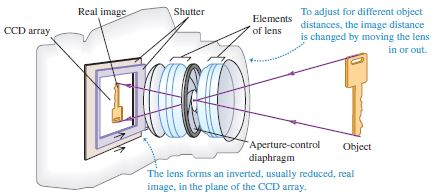
Figure 14: Parts of a camera and image formation.
Going back to the previous analysis about thin converging lenses, it's worth mentioning that one can be used as a magnifying glass. This use is based on the case shown in Figure 4. It forms a virtual erect image of the object which is bigger and placed further from the eye. The virtual image is more comfortable to view when it is placed at infinity, so that the ciliary muscle of the eye is placed at infinity. In this situation we do not care about the lateral but the angular magnification. The latter is calculated, as,
where 25 cm is the minimum focusing distance (near point) of the eye and f the focal length of the magnifying glass. The reason why we care about angular magnification M is that the apparent size of an object is determined by the size of its image on the retina of the eye. The latter depends on the angle θ subtended by the object at the eye, which is called angular size.
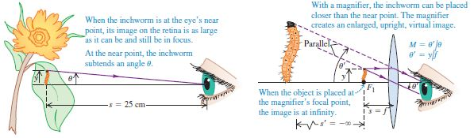
Figure 15: Magnifying glass and angular magnification. When we need bigger magnification than those a magnifying glass can provide we use a microscope. A microscope is also called compound because of its many parts. In each device a primary lens, known as objective, forms a real inverted image and a second one, known as eyepiece, is used as a magnifying glass to make a bigger virtual upright image, as shown in the figure below(Both the objective and the eyepiece consist of multiple lenses in a specific configuration, which is not presented to simplify the process).
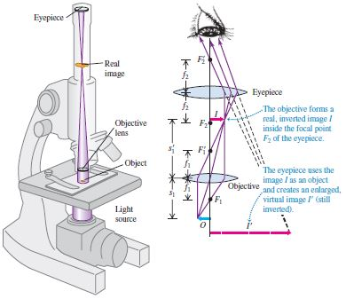
Figure 16: Parts of microscope and image formation. As you can see in Figure 8 the object O that is going to be observed is placed just beyond the first focal point F1 of the objective lens. The objective lens as a thin converging lens produces a real enlarged image I. This image I, if the device is properly designed must be formed just inside the first focal point F1' of the eyepiece. This is preferred compared to forming the image on F1' due to the slightly bigger angular magnification that it offers. Finally, the image I' formed by the eyepiece is virtual and is placed inside the range of the eye. As with the magnifying glass, we care about the angular magnification which is now the product of the lateral magnification m1 of the objective and the angular magnification M2, so it can be calculated by the equation,
Computations & Results
The main idea of the project, as far as the structural part is concerned, is to design a microscope from which a smartphone can capture video. In the previous subsection we considered the system microscope-eye and also mentioned that the optical behaviour of a camera is similar to that of the eye.So, if we find the near point of the smartphone's camera we can calculate the angular magnification of our microscope.
After many tests, we found out that we need a lens with a focal length f equal to 9 mm, or smaller, in favour of small size of the device. The cheaper lens that we found on the market has a focal length f of 7 mm. Moreover, we found out experimentally, that the smartphone LG G3 , which we use for testing, is characterised by a minimum focusing distance of about 60 mm.
If we use one lens as an eyepiece, with its object placed on the first focal point F 1 , then its angular magnification will be,
Ιn order to reach the requested angular magnification of 200x we need our objective lens to provide a lateral magnification of,
By combining Equation 1 & Equation 2, we can say that the lateral magnification of a thin converging lens is given by the equation,
If we wanted to use one lens as an objective, then the distance s' between the thin converging and its real inverted image would be,
and the specification of small size would not be satisfied. Pay attention to the following, the lateral magnification m in the above calculation has negative sign because the image formed from the objective lens is inverted.
So, in order to achieve the requested lateral magnification of 25x, keep the size of the device small and use as few lenses as possible to minimise the cost, we choose to use two instead of one objective lens. For each one, the lateral magnification will be 5x, while the distance s between it and its object will be, according to Equation 8,
The distance s' between the thin converging lens and its real image will be, according to Equation 9,
Finally, we end up with a three lenses system, shown in the figure below, providing a total angular magnification a bit greater than 200x. 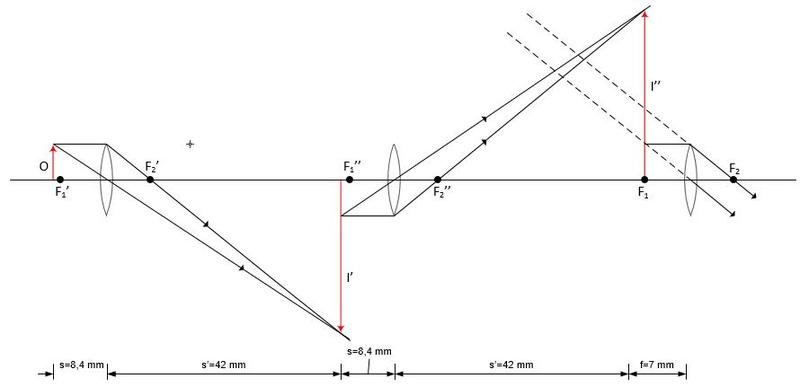
Figure 17: Three lenses system.
Note: It should be noted that one of the reasons why the angular magnification of our system is a slightly greater than the requested (200x) is that other smartphones may have a little smaller minimum focusing distance so the angular magnification in that case will be smaller too. Due to this some of the magnifications calculated are rounded. Another reason is that since the device is going to be produced in a 3D Printer the distances cannot have many decimals, so we had to make a choice. This is, also, why the object of the eyepiece was chosen to be on its first focal point F 1 and not just inside of it, as happens in microscopes.
Device Design
Given the distances between the lenses, which are presented in Figure 11, and the overall specifications for the device we came up with the design shown in the following figure.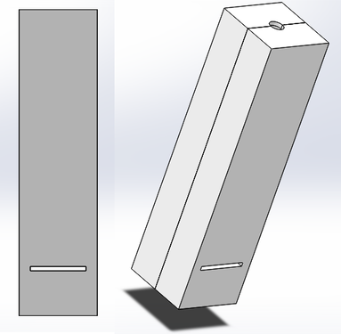
Figure 18: Design of the device.
The design of the device is based on the concept that it will be attached at any table or anything with a similar shape, like a desk, with the use of a double tape. As you can see, it consists of two same parts because after being printed there must be a way to place the lenses, the light source and the color filter inside.
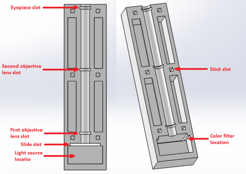
Figure 19: Part of the device.
As shown in Figure 13, the appropriate slots and locations for the optical system have been predicted. Moreover, one can observe that there are six slots named "Stick slots". These slots have a dimension 3 mm x 3 mm x 7 mm and are very useful for the assembly of the two parts. There, six sticks, one of which is shown in Figure 14, will be placed and the other part will "clasp".
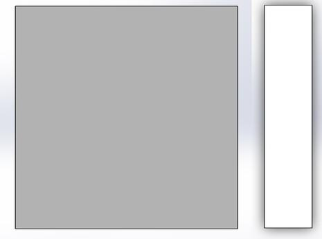
Figure 20: The stick with dimensions 3 mm x 3 mm x 14 mm. (On the left its cross-section) 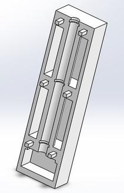
Figure 21: One part with the six sticks attached. The overall weight (96.48 g) of the device is calculated given the material and the overall material volume used. The former is ABS, as the device will be manufactured in a 3D printed and the latter is computed by means of the 3D CAD software during the design (SolidWorks). Taking into account the weight of lenses, light source and color filter, the total weight will not exceed the 150 gr. It should be noted that by not using additional material around the axis of the three lenses greatly minimises the total weight. Moreover, taking into consideration its compact size (35 mm x 35 mm x 136,4 mm) all the specifications and goals are satisfied. As far as the light source is concerned, this will be a simple circuit consisting of a led light, a resistance, a battery and a light switch.
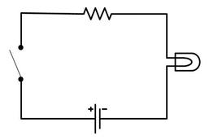
Figure 22: Light source circuit. As a final point, it should be mentioned that the colour filter will be placed on the location shown in Figure 13 by using a rectangular frame that can be attached. The design plans are publicly available and can be accessed through the following link :
Milestone 3: Device fabrication
Future thoughts - Extending the project
With regards to the software part, the following features and changes have to be implemented:
- Since the android application is based on Open Camera, and since Open Camera is licensed under GPL v3, no commercial product can come out of it. Therefore, the camera part of the application has to be rewritten and licensed under a different license (e.g MIT, 2-Clause BSD etc).
- The video has to be delivered to the server in an encrypted manner. As an improvement in the communication protocol, the client can first encrypt the data using standard encryption techniques (AES 128, 256 etc).
- With regards to the image processing part, the code execution can be optimised using the following methods
- Parallel execution of tasks (perhaps with the use of Matlab Parallel Computing )
- Use of a compiled lower-level language. C++ is a realistic choice due to its object-oriented nature as well as the variety of image-analysis codes available.
- Send and process video at the same time, in a live-stream fashion, so the overall computation time of the results is decreased.
Acknowledgements
We would like to thank the following people for their indispensable support and valuable insight during this project :
- Leonidas Alexopoulos
- George Kanakaris
- Dimitris Tzeranis
- Dr. Ioannis Barberoglou
- Stelios Gietos
- Vangelis Koukis
References
Articles/Sites
- http://panacea.med.uoa.gr/topic.aspx?id=654
- http://stackoverflow.com/a/13416628/2843583
- http://examples.javacodegeeks.com/android/core/socket-core/android-socket-example/
- http://www.mathworks.com/help/vision/examples/motion-based-multiple-object-tracking.html?searchHighlight=maskplayer
- http://www.mathworks.com/videos/computer-vision-made-easy-81802.html
- http://www.mathworks.com/products/computer-vision/
- http://opencamera.sourceforge.net/
- https://en.wikipedia.org/wiki/Lens_%28optics%29
Further Information
Books
- Young and Freedman, University Physics with Modern Physics, 13th Edition
- WHO - Laboratory manual for the Examination and processing of human semen
(c) 2015 Department of Mechanical Engineering, National Technical University of Athens.